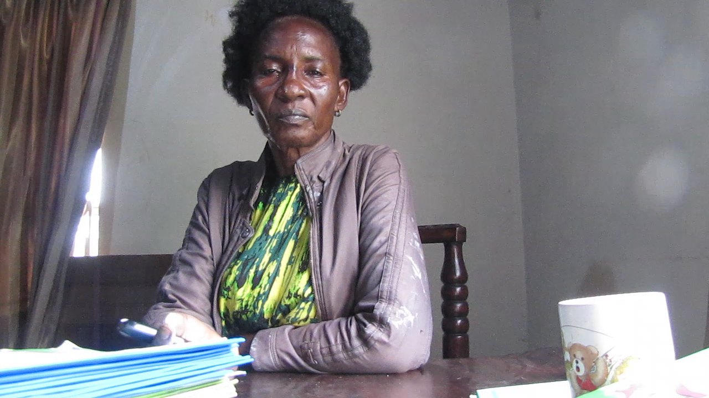
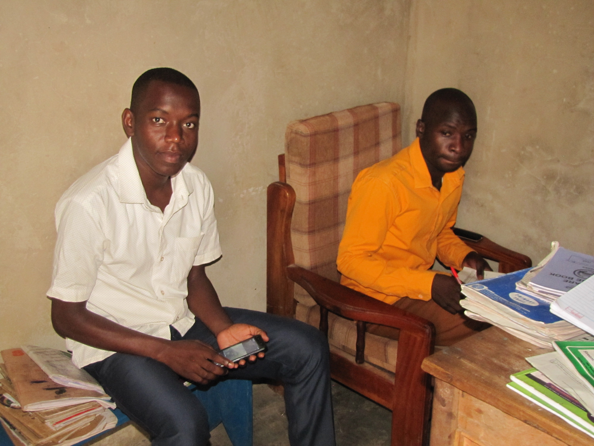
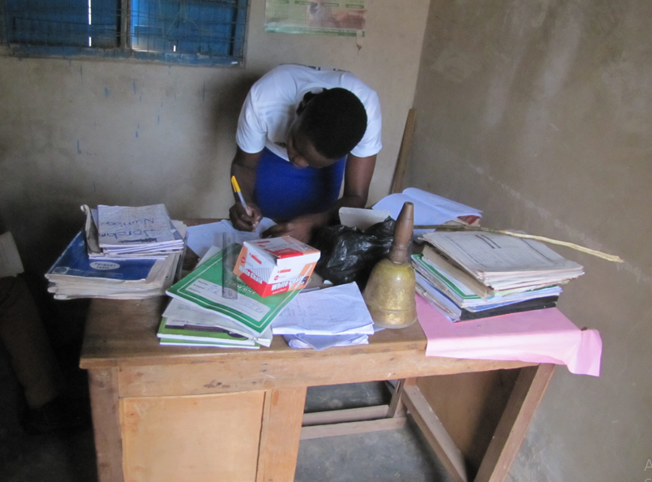
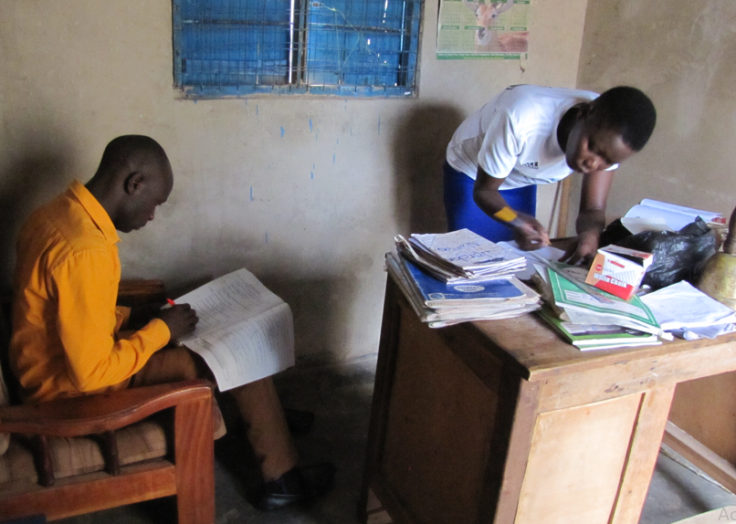
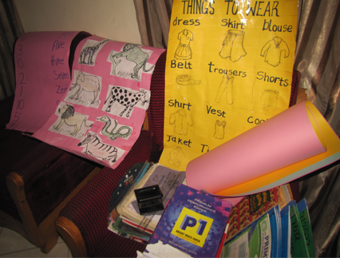

HeadMistress-EVE MATOVU NAGGINGO

Head Masteress : Mrs Najjingo Matovu Eve
Tell: 0772 684 4 / 0754 188 890
Where is your School found?
KJ’s P/S is found in Ntenjeru sub county,kayunga town council,Bukolooto- ndeeba village.
Why did you start this school?
Before starting this school,there was actually a miracle because I did not want to make as school as idid not want to be a teacher anymore because teachers are under paid but God told me am a teacher. A voice came to me telling me am a teacher. I was being forced by God to make the school.
I had a view of making a hotel or dairy to make money.
But Whatever I started, I failed. When I wanted to rent a place for any other business I failed until someone else rented that place and made the same business I wanted to make in the first place.
Where did you get capital to start this school?
It was God’s grace
It was until I got this place and constructed this school. I started with a wooded buildings with my little money that always got as salary.
At the start a storm came and blew every building which was very hard for me, I also got attack as my legs and the knees also got sick but God made me through. I got a good Samaritan who helped me with sheets to start the school.
After constructing now it was a tag of war to get a name for the school. I thought I would give my own names but God gave me the name He wanted by Himself (king Jesus Nursery and Primary Sch). I wanted to give King David, and many others but because I had a fear that if I named it King Jesus Moslems wont give me their children.
What does your mission statement Explain?
Little by little as I got courage I had to proceed so that I could construct and remove the yoke of young mothers who give birth at a young age. So we had a mission of changing the community, fighting for the girl child .
As the school is on a foundation of Christ, we would eliminate or reduce young mothers in the community.
What special things are you to put in the curriculum of the school?
Putting guides, doing scouting and delivering self sastained girls and children, responsible citizens who are policemen, teachers,doctors selfsustained citizens etc.
Which things do you teach children from King J P/s than else where?
I will teach them to love God
As our motto says, touch the Heaven and change the world
The other thing is scout where there is skill training which helps one to face the challenges,
The teachers themselves guide the pupils on how to do thing and making them upright,
We also call the police to help us on our pupils
We talk to the pupils every after two weeks on guidance and councelling.
KJ P/S,
Do you have children going to seat for UNEB this year.
Actually we have 4candidates due to the Covid period which has somehow affected us but our children are very canning.
Which information do you want to give parents?
We appeal to them to give us more children than giving them somewhere where they will not turn up well because for us we are blessed by Jesus Himself who helps us groom our children
KJ’s P/S is found in Ntenjeru subcounty,Bukolooto-Ndeeba Village.
Tell: 0772 68444 4 / 0754 188 890




staff activities -Teachers Marking Weekly Test
A DEDICATED,WELL TRAINED STAFF AT KING JESUS P/S